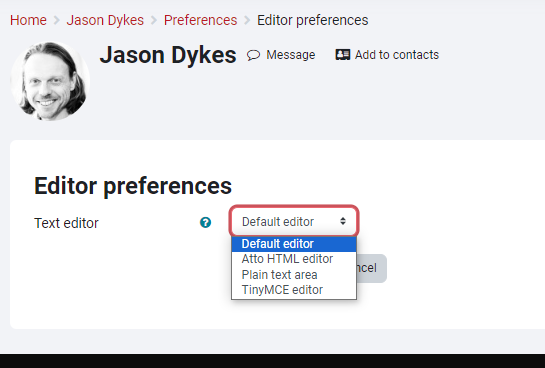
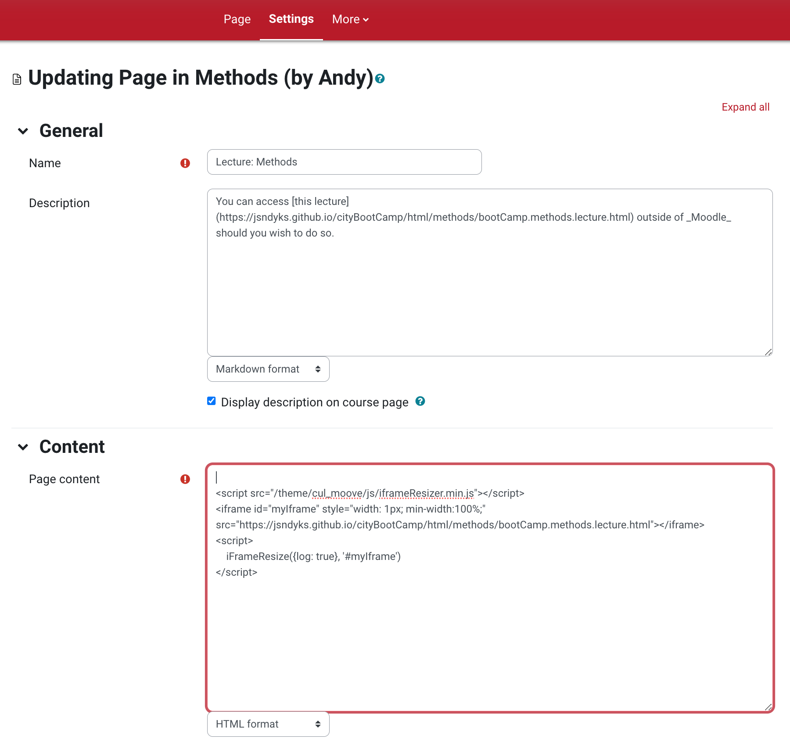
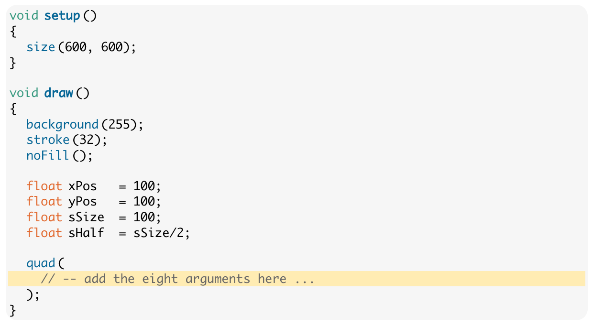
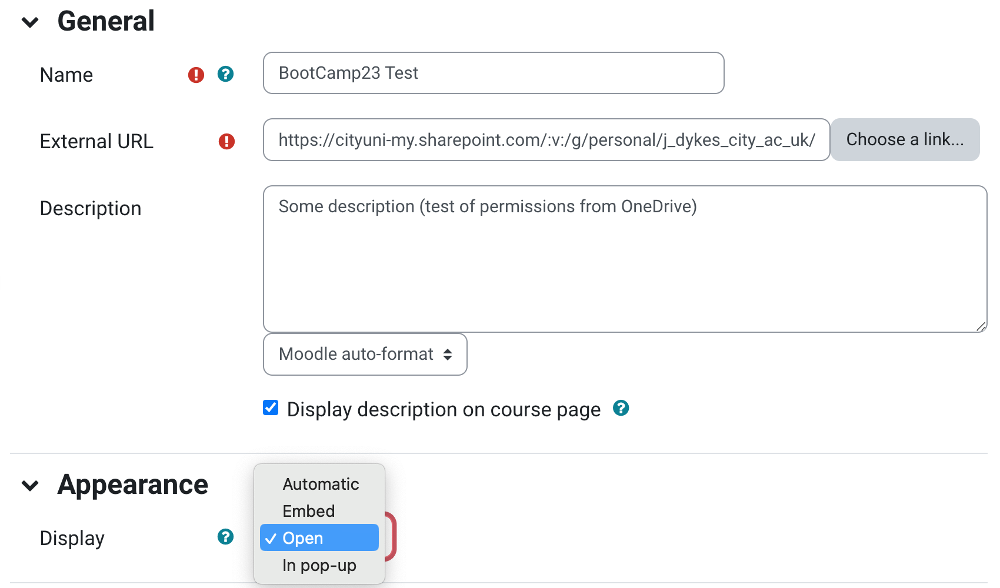

BootCamp: Moodle 4 - Top Tips for Lecture Leaders
If you are leading one of the BootCamp lectures and need to update materials on Moodle ... here are some top tips ...
Things to Do
- tidy up your 'section' in Moodle - lecture, exercises and any other resources
- check that all the links work, that images show and that clickable examples work - a tough job but we need to check and update!
- check for all links to pages in the module - these will link out to the old Moodle (!)
moodle.city.ac.uk/whatever... you will need to change these to the new moodlemoodle4.city.ac.uk/somethingDifferent- what a pain
Exercises and Priorities
Have a look at the top of Lecture: Introduction to Processing
We use <div> </div> tags to differentiate (visually and in terms of content) between :
codeTask- do this bit of coding as you read.coreTask- essential. It is very important that you complete these tasks.
During the labs, you should prioritise completion of the core tasks before others.challenge- optional. Have a go if you have finished everything else and have some spare time.
Things to do if it all seems a bit easy.aside- non-essential context: you may find this interesting or helpful.tip- brief tips or common mistakes.
Watch out for them as they could save you much time and effort.
These are tagged with ...
<div class="codeTask"> content </div>
Make sure that you are tagging the right things with the right tags - this is important differentiation that messages for students and staff who advise them and we need to be consistent.
Edit in HTML
The fancy Moodle editor messes our BootCamp pages up, so edit in HTML:
You can set editor preferences in new Moodle here:
Use Default Editor.

If you don't do this, then you will have to click buttons to get to the editor every time you need to edit a page as shown here ...

Click the down arrow (top left) then the HTML button </> .
But in all honesty, you are much better off Loading from an External URL and Using an External editor and SVN ... 👇
External editors will make sure that your HTML is valid and this is important in the BootCamp pages as they use <div> </div> tags to format and structure things.
Load from External URL into Page with iframe
Moodle doesn't do a good job of keeping versions, so I strongly advise you to use some kind of versioning and revision control system to develop and keep a record of materials.
You can then either :
- copy and paste your HTML into a Moodle page
or, much more efficiently, and my strong recommendation :
- load pages directly from your external SVN / site into an
<iframe>
The Interaction Lecture uses this approach by way of example - have a look.
It loads from this GitHub Page, which I also mak reference to at the top of the document so that students can access it outside of Moodle.
You need to use GitHub Pages (so easy that even I can do it) and it is smooth, simple, quick, reliable and generally lovely ❤️.
We have set up a script that will make the <iframe> resize reliably and responsively.
Your HTML must make reference to this CSS with this code and exact URL in the head tag at the top of the HTML file:
<!-- iFrame -->
<script type="text/javascript" src="https://jsndyks.github.io/cityBootCamp/js/iframe.js"></script>
I also recommend adding a blank paragraph at the bottom of your HTML just to be on the safe side. Put this after End of row just inside the final /div:
<!-- End of row -->
<!--- spacer for iFrame -->
<p style="padding-top:1em"><hr/></p>
You then add your <iframe> with this, remembering to replace the src URL with the link to your content:
<script src="/theme/cul_moove/js/iframeResizer.min.js"></script>
<iframe id="myIframe" style="width: 1px; min-width:100%; border:none;"
src="https://jsndyks.github.io/cityBootCamp/html/art/2023%7C24/bootCamp.art.2023.lecture.html">
</iframe>
<script>
iFrameResize({log: true}, '#myIframe')
</script>
Working in this way is my strong recommendation.
It should look something like this - but I added border:none; 👆 to the iFrame styling after making the screen dump as it's tidier!

Shout if you need a hand.
Watch out for DIV!
Jo set things up in BootCamp to structure lecture content with <div> </div> tags.
Content fits into a series of rows that are structured line this ...
<div class="units-row">
<div class="unit-70">
<!-- Left column -->
</div> <!-- End of left column -->
<div class="unit-30 annotation">
<!-- Right hand column for small images, popup sketches and annotations. -->
</div> <!-- end of right column -->
</div> <!-- End of row -->
So that's ...
| left column | right column |
|---|---|
| Main content, 70 characters wide (it wraps, don't worry) | Small images, popup sketches and annotations, 30 characters wide, top aligned |
For this to work, you need to make sure that your <div> </div> tags close and that each row contains a unit-70 and a unit-30 <div> </div>.
Please, please, please check your HTML and make sure that your code is valid and your <div> </div> tags line up and close!
Format and Highlight Code in Pre tags
Make sure code goes in <pre></pre> tags with the following configuration (they should all look like this right now).
This will format it nicely and make it copyable.
<pre class="brush: processing;
gutter: false;
toolbar: false;
highlight: [18]">
</pre>
The highlight number allows you to highlight a line of code - useful.
Line 18 here.

Hide and Reveal
In some of the newer lectures we run progressive programming challenges in class. This works pretty well.
This requires a 'Reveal' button with solutions so that students can keep up with developing solutions.
See this lecture on Vera Molnar for example - it contains lots of buttons that say ...
- Click to Show Solution - But Have a Try First!
Coding Takes Practice and Requires 'Doing'!
Here's how to do it ...
<!-- Hidden code button -->
<span><a href="#" class="link-show-code">Click to Show Solution - But Have a Try First! Coding Takes Practice and Requires 'Doing'! </a></span>
<div class="prettyprint" style="display: none;">
<pre class="brush: processing; gutter: false; toolbar: false; highlight: [18]">
quad(
// -- add the eight arguments here ...
xPos - sHalf, yPos - sHalf,
xPos + sHalf, yPos - sHalf,
xPos + sHalf, yPos + sHalf,
xPos - sHalf, yPos + sHalf
);
</pre>
</div>
Adding Videos to Moodle
Videos are a bit of a nightmare now MS Stream is dead.
After tonnes of messing about (thanks Olivia and others), here is how to do it :
- put your Movie somewhere in a folder on the One Drive - try
Movies/BootCampor something. - use the 3 dot menu
...on file manager, selectshare - click the cog icon (sharing settings)
- Choose
people in City, and can view, and block download - click
APPLY - then copy the link with
Copy link - click the
Xto close the window (don't send an email to anyone).
Then use this link with all of the long letters and things in Moodle with :
- Switch on Edit Mode
- In whichever section requires a video, click
Add activity or resource - From this mass of options, choose
Url - Add the long URL that you have copied above from the One Drive permissions shenanigans as the
External URL - In
AppearancesetDisplaytoOpen- it won't work otherwise - make yourself a mojito

I hope that works for you.
20/09/2023
27/09/2023
29/09/2023